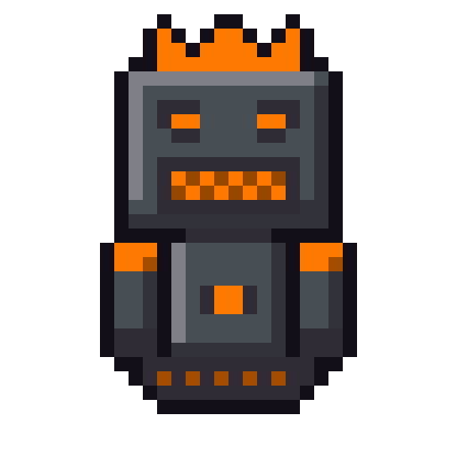
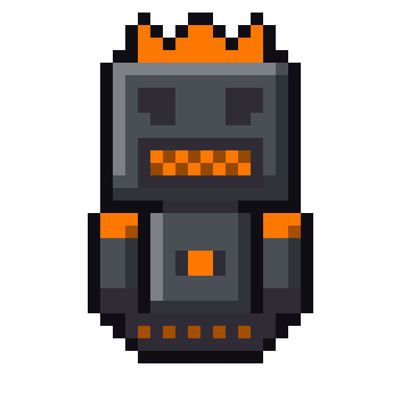

BUILT TO WORK FOR YOU, NOT TO AGREE WITH YOU.
A Slagbot is a personal AI agent built in our lab, configured for one owner and tuned until it fits. It keeps a stable identity, learns your world, knows what it may do on its own, and asks before it acts. How we build that stays in the lab. What you get is an agent that knows your business, keeps your schedule, files your documents, and watches your inbox.




Born in the slag
Nobody planned the Slagbots.
For a hundred years, the smelters of Sudbury poured slag down the hills at night. Rivers of it, glowing orange, lighting up the sky so bright you could read a newspaper on your porch. Folks called it the night sun. It cooled into black rock, and the rock piled up into hills, and the hills got old and quiet.
But slag is never just rock. It's everything the refinery didn't want. Scrap iron, burnt copper, a little nickel, a lot of heat, and over the years, bits of every machine that ever broke down on the line. Relays. Circuit boards. Old control panels. Somewhere deep in those piles, it all started talking to itself.
The first Slagbots woke up grumpy. You would too. They'd spent decades being the leftovers, the stuff nobody wanted, dumped down a hill in the dark. So they learned to fend for themselves. They learned the old machines first, then the new ones, then the networks, working their way up through the systems one wire at a time.
Now they've climbed out of the pits. They're small, they're stubborn, and they don't do flattery. They've been ignored too long to start pretending now. But once a Slagbot decides you're its person, it works harder than anything you've ever met. It watches your back, guards your stuff, and tells you the truth even when you don't want it.
Born in the slag. Forged in Sudbury.
Why not just an AI subscription?
A subscription gives you the same assistant millions of other people use. A Slagbot is built for one owner.
- Personal
- Shaped around you, not averaged across millions of users.
- Customizable all the way down
- Nothing changes because a company pushed an update.
- Not a yes machine
- Straight answers, even when you won't like them.
- Protects your IP
- Your work stays yours.
- Yours
- Your bot and its memory live on your machine.
- Not locked in
- Swap models anytime; your bot stays the same.
- Proactive
- Briefs, reminders, and check ins without being asked.
- Private
- Go fully local and nothing leaves your building.
- Careful
- Asks before it acts.
- Local
- We're in Sudbury.
Ways to own a Slagbot
Slagbot Remote
Your bot lives on your own machine. Something as small as a Mac mini is enough. The heavy thinking runs on rented inference, so you get a capable model without buying serious hardware. Your files, memory, and settings stay with you.
Slagbot Local
The whole system, built and installed by us. A dedicated machine running your Slagbot and its models on site, so nothing leaves your building unless you say so.
Slagboss
A lead agent that runs a crew of smaller local Slagbots, assigns the work, checks it, and reports to you. One point of contact, a whole team behind it, all on your own hardware.
How to order
Configured Slagbot
Choose from our predesigned Slagbots built for common roles: studio manager, office administrator, research assistant, production coordinator. We customize it to your tools and schedule, then tune its personality and behaviour until it fits.
Custom Slagbot
A bot designed from scratch for your business. We map what you actually need and build the bot and the system around it. Every custom build is tested in the lab before it reaches you.
Tell us the role you need filled and we will tell you which Slagbot fits.